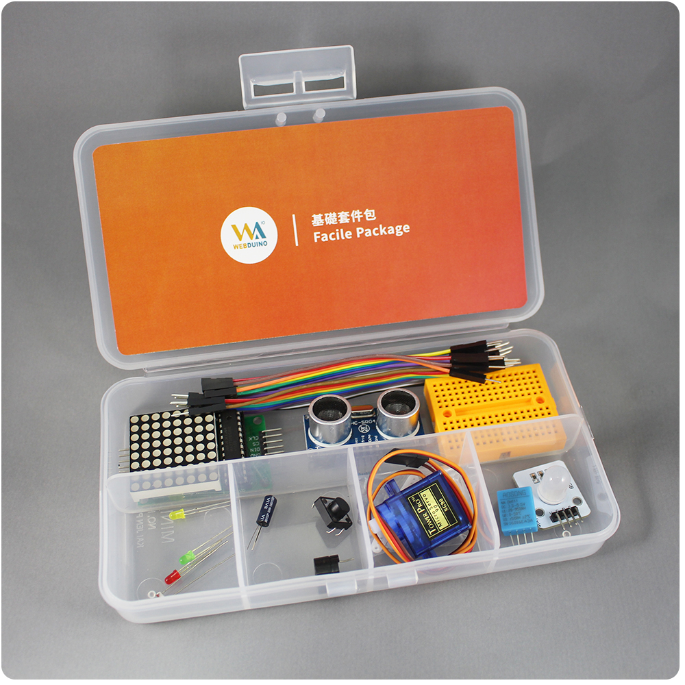
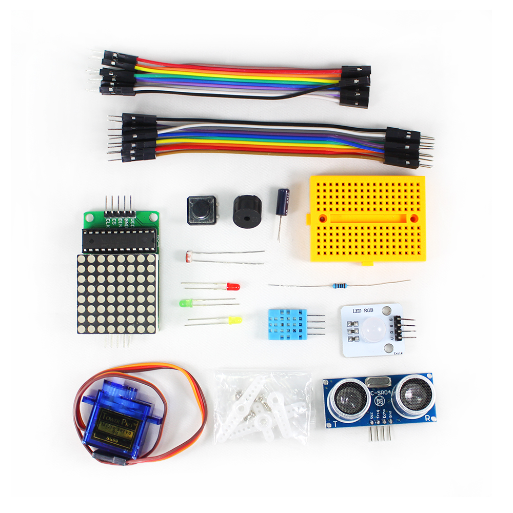

Webduino 基礎套件包
Webduino 基礎套件是入門的零件材料包，所對應的範例在官方網站均有提供，可從中學習到基本的電子電路，從點亮一顆 LED 燈開始，到自由操控七彩霓虹燈，從玩轉按鈕開關到用超音波傳感器控制 Youtube 影音播放、甚至可以偵測溫濕度來開啟風扇等，以上都只是一小部分的創意應用，更多想像的空間就留待你的創造力去實現。
售價：
產品內容：
- 1. LED x3
- 2. 三色 LED x1
- 3. 超音波 x1
- 4. 按鈕開關 x1
- 5. 振動開關 x1
- 6. 伺服馬達 x1
- 7. 蜂鳴器 x1
- 8. LED 點矩陣 x1
- 9. 溫濕度 x1
- 10. 光敏電阻 x1
- 11. 電阻 x1
- 12. 170 孔麵包板 x1
- 13.杜邦線 ( 公公 ) x10
- 14.杜邦線 ( 公母 ) x10
產品照片：

產品內容物：
